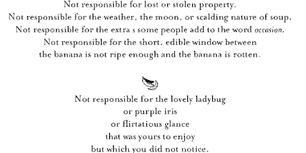

Twitter highlights of the 2010 Web Directions USA conference
 Were you unable to attend Web Directions USA 2010
in Atlanta (September 23-24)? Find twitter streams a bit overwhelming, lacking in context, or
chronologically confusing?
Were you unable to attend Web Directions USA 2010
in Atlanta (September 23-24)? Find twitter streams a bit overwhelming, lacking in context, or
chronologically confusing?
UPDATED: with the latest slides and links from presentations.
Here is your solution: a re-organized, select set of relevant and/or funny tweets for each of the talks given. Please post comments if I've missed any particularly good tweets!
I'll also be posting a few notes, as well as links to the slides and podcasts of these talks when they go live on the Web Directions site. Another blogger has also written more detailed reflections on the sessions he attended.
Design
CSS3
Effective and efficient design with CSS3 with Zoe Mickley Gillenwater
http://zomigi.com/blog/web-directions-usa/ (Additional Resources)
- Zoe Mickley Gillenwater showed practical ways CSS3 improves load times
[jbrotherlove ]
- Slides from @zomigi's preso "Effective & Efficient Design with CSS3" at http://ow.ly/2JB1G #css3 [redcrew]
Links & Notes
- Burger CSS metaphor: start with basic experience (aimed at gracefully rendering for IE6 users); and then layer on (or progressively enhance) with STABLE CSS3 stuff (like bacon and mayo, and other additional toppings) for those IE9 & other CSS3-compliant-browser (webkit-based) users.
- CSS3, because of speed gains, even improves the experience for IE6 users!!
- W3 has broken CSS3 into multiple modules, instead of one, LONG document.
- If not fluid layout, you can use 3 different fixed width layouts with @media. In fact, even if you're doing fixed layouts, use fluid widths for the internal divs to provide some flexibility.
- Is HSLa better or easier than RGBa?
- @media queries ROCK!
- @font-face considerations: is it licensed for embedding? what's the file size, will it be too large for downloading?
- IE9 doesn't do gradients or text-shadow, but does all other CSS3 stuff.
- Tools:
- IE Tester free web browser to test versions 5.5 through IE9 beta (can use Window Virtual Machines on macs)
- Create resolution/width presets using web dev toolbar in Firefox
- protofluid (has preset widths for mobile)
- Books authored: Flexible Web Design & Stunning CSS3
Creativity, Design and Interaction with HTML5 and CSS3 with Dan Rubin
http://webdirections.org/podcasts/WD10/wds10-Dan-Rubin.mp3 (Audio Podcast)
http://realworldcss3.com/download/WebDirections2010-CreativityDesign-and-Interaction-with-HTML5-and-CSS3.pdf (Presentation Slides - PDF)
http://realworldcss3.com/resources/
- bookmarked: Responsive Web Design | A List Apart by Ethan Marcotte [jbrotherlove]
- @danrubin "If you have an app that requires rounded edges for user interaction, you're probably going about it the wrong way." [mhluongo]
- The consummate crooner, @danrubin is preaching the gospel of HTML5 & CSS3. [JC]
- Super psyched about designing in the browser soon. (dear Photoshop, it's not you, it's me.) [birdsoar]
- @danrubin said "IE9 is not even out of beta, and it already makes up for IE6" woot! [glengordon]
- http://bit.ly/aX1oc3 - very cool canvas experiment [mhemlock]
- @danrubin makes me want to be a designer!!! [bewweb]
- What can we do as web designers & developers to accelerate the adoption of HTML5 & CSS3? We use the tools (browsers) given to us.[felfoldi]
- Biggest insight? I'm fascinated by what we can do with [at]media. [jtcchan]
- Neat CSS3 trick: place a single color RGBa CSS gradient above a greyscale texture using multiple backgrounds to tint the texture. [danrubin]
Links & Notes
- Best HTML5 additions:
- <canvas> ("drawing with JavaScript")
- <form> LOTS of new input types
- Holy Trinity of the Web:
- Structure (HTML),
- Presentation (CSS), and
- Behavior (JavaScript)
- Book: Keith, Jeremy. HTML5 for Web Designers
- fontsquirrel.com [free web fonts]
- quirksmode.org/css/contents.html [which browser renders (or doesn't render) which selectors]
- http://css3exp.com/moon/ [funny, shows HTML5 & CSS3 in use]
- http://modernizr.com/ (IE degrading JavaScript kit)
- http://selectivizr.com/ (IE degrading JavaScript kit)
User Interface/Experience
Learning to Love Humans: Emotional Interface Design with Aarron Walter
http://www.webdirections.org/resources/aarron-walter-learning-to-love-humans-emotional-interface-design (Presentation Slides)
- Now we are onto loving humans! humans? We are coming peace earthlings! [naglitech]
- Aiming for usable is like a chef aiming for edible -- @aarron [pinchzoom]
- Attention is finite [bewweb]
- #design Last presentation suggested a hierarchy with usable interaction coming before pleasurable. [theonetruebob]
- Thanks for the kind words #wdxusa people. Learn more about emotional design in this article: http://bit.ly/dCwWf2 [aarron]
Balancing data-driven & "genius" design with Ryan Freitas
http://static.webdirections.org/resources-public/ryanfreitas_webdirections_balancingact.pdf (Presentation Slides)
- "Data liberates us from the delusion that we understand all of the needs of our audience."-@ryanchris [stephanietate]
- Freitas' talk brought it all together. SEO, metrics, accessibility ~ data-driven vs. genius design. Wow. [daveharkness]
- If you dug my #warmgun talk, the #wdusa deck I just posted goes into more detail about @odannyboy's "genius" design and data-driven design
Remote research: Running effective remote studies with Juliette Melton
- Juliette Melton promises to help us deal with the fact that we can't observe as much about the user when remote usability testing. [theonetruebob]
- So much of the content relates to the #utc Learning and Leadership doctorate. Currently learning about remote research from @j. [jenseninman]
- Benefits of remote research. http://plixi.com/p/46850307 [theonetruebob]
- Upshot of missing the direct observation of user during remote testing is that most most purposes, it probably doesn't matter [theonetruebob]
- Interesting: Juliette posits recruiting test subjects for small tasks using mechanical Turk [theonetruebob]
- Juliette suggests recording calls to test participants using Skype separate from screen sharing. [theonetruebob]
- Funny to see behaviors codified for usability testing that I just picked up over lots of tests. Thinks like active listening. [theonetruebob]
- Pro tip: Use gaming quality headset for top quality audio during remote research.—@j [jenseninman]
- Choose testers with authentic reasons to use the site vs. professional testers.—@j [jenseninman]
- I often present tasks in remote test as emails from a colleague. Where we struggle is participants juggling these. Thoughts? [theonetruebob @j]
- You're going to going to have tech failure. Be apologetic. Reschedule if necessary. It will be ok.—@j #remoteresearch [jenseninman]
- "If you know it's a problem—fix it."—@j So true about remote research and lots of area of life [rhyaniwyn RT @jenseninman]
- direct observation for remote testing is no different than lab - it sucks just as much to watch long videos. [boltron @theonetruebob @j]
Telling tales with Relly Annett-Baker
http://www.webdirections.org/resources/relly-annett-baker-telling-tales/ (Presentation Slides)
- @rellyab book recommendation: mother tongue (pidgin, not pigeon, vs. Creole) [adellefrank]
- Professor layton video game teaches math, but popular b/c of STORY. @rellyab [adellefrank]
- Another @rellyab book rec: encyclopedia of an ordinary life (hilarious copyright page) [adellefrank]
- Bird by bird (lamont) tip: sh*tty 1st draft is prerequisite to good, editable, testable content. @rellyab [adellefrank]
- "FAQs are the duct tape of the web" and the About page sux too. @rellyab [adellefrank]
- @rellyab homepage, desired service/product, about, FAQ, & contact are most common pages. Critical duct tape! [felfoldi @adellefrank]
- but if homepage, about etc. are critical, @rellyab argues should NOT be mere duct tape, but car towing strap strength [adellefrank @felfoldi]
- Relevant, fun content trumps good design on http://www.lingscars.com @rellyab [adellefrank]

Links & Notes
- 99% of users only care about your content (they aren't going there for your design).
- Make relevant "About" pages: http://www.thinkgeek.com/about-us/ (software/hardware specs of site!)
- FAQs should be questions your users ask (not that you WISH they asked).
- Book: Storytelling for User Experience.
- Web developers & designers: you created it, so TAKE responsibility for making it (the content) better!! [Great call for professional ethics]
- Thought experiment: look around the web at About & FAQ pages, anytime you see a bad one: imagine a bunny in a blender!
Agile meets UI with Esther Derby
http://www.webdirections.org/resources/esther-derby-agile-meets-ui/ (Presentation Slides)
- Photo: @estherderby's slides are awesome. I'm learning the wisdom of 'Agile Meets UI' — at Lowes Hotel http://gowal.la/c/2yHzj?139 [goodwitch]
- Ester Derby: in agile without UI/UX you'll get functional software, and may get usable, but won't get pleasurable software. [goodwitch RT @theonetruebob]
- "when you have a cross-sectional team, the members understand other professional concerns in areas not their own." @estherderby [thebethjoseph]
Typography
2010: The year of web typography with Jason Cranford Teague
http://fluidwebtype.info/index.php/main/web-directions-usa
- "Typography is to type as voice is to speech" cc/@jasonspeaking [stephanietate]
- How many fonts do you see on the web? A: 5 (yuck) [mhemlock]
- 2010 the Year of Web Typography. Until now we've all had the same 5 fonts on the Web giving us the same voice.—@jasonspeaking [jenseninman]
- Jason Teaque argues that 56 fonts installed on all platforms with MS Word can be considered among the web-safe fonts. [theonetruebob]
- Fun to think of fonts as "star" and "understudy" fonts. Nice thinking by @jasonspeaking. Will borrow with crediting in the classroom. [jenseninman]
- "We should have had flying cars by 2010. We don't, but we do have downloadable web fonts." ~ @jasonspeaking [JC]
- We think of fonts as images but a font is like a piece of software. (In context of EULA—End User License Agreement.)—@jasonspeaking [jenseninman]
- Sounds beautifully semantic! RT @awdg from @jasonspeaking naming @font-face declarations based on purpose rather than font name. [adellefrank]
- Getting great resources of places to get fonts. Juniors & sophomores-will share! [SarahKyle0818]
- When choosing webfonts look for consistency, style availability, legibility, readability, and optimization /cc @jasonspeaking [SarahKyle0818]
Development
HTML5
HTML5-baked, half-baked, or ready for the table? with Stephanie (Sullivan) Rewis
Yes, this was my FAVORITE session. So, I had little time to tweet and I'm going to do a separate blog post on it, to capture all the structural goodness!
- loving @stefsull 's food analogy for html5 [adellefrank]
- @stefsull calls pre-9 IE: internet EXPLODER ;) [adellefrank]
- OMG, just attend #stefsull presentation, the queen of HTML5. Can I get a autograph from her? She has celb status! [naglitech]
- @stefsull nice chatting at #wdusa. Can you send me the CSS reset/hack for HTML5 search forms? Thanks! Enjoyed your talks btw [cartersch]
HTML5 for Web Application Developers with Michael Mahemoff
http://prez.mahemoff.com/wd-offline/#slide1 (Presentation Slides)
- next up: another session on HTML5 (you'd think I'd be overloaded). this time, focusing on offline storage options. [jbrotherlove]
- Learning about web application cache from @mahemoff. Yum! [goodwitch]
- Local storage and offline html5 - wow!! [mhemlock]
- Sat in on @mahemoff's talk. Really cool SVG timeline with animation smack dab in the middle. [slicknet]
- http://is.gd/fqVIX Posted slides from today's talk on App Cache and Offline Storage "HTML5: Offline, and On" [mahemoff]
Javascript
High Performance JavaScript with Nicholas Zakas
- Now 15 mins away from starting my talk. For this conference, the slides are Tron-themed. http://slidesha.re/9UHryp [slicknet]
- since this is the dev stream, i'm actually surprised more people haven't heard of documentfragment.[meeech]
- heard great things about the WebWorkers and High Performance JavaScript discussion. [jbrotherlove]
An introduction to server-side JavaScript with Tom Hughes-Croucher
- The Cassis project @t mentioned at - client and server scripting implementation subset http://bit.ly/aa9sx6 [aarron]
- "In five years it will be obvious that any scripting language other than Javascript will be dying." ~ @t [mhemlock RT @awdg]
- Feeling like a contrarian re: the death of other scripting languages in favor of JS. [cachedout]
- you are not alone. I think the JS quote plays well. but it smacks of hyperbole [jbrotherlove @cachedout]
Mobile
Location, location, geolocation with Jonathan Stark
- @jonathanstark pointed out "offline" has some weird ambiguities. If it's connected to GPS is it offline? Bluetooth? [mahemoff]
Designing and building mobile apps with web standards with Brian Fling
- Mr. @fling just flew a drone across the room via his iPhone. // must have at @coffeecup!!!!!! [andrewwatson RT @jc]
- ok. parrot drone is pretty cool. presenter just used one to illustrate his point. [meeech]
- At watching @fling try to kill the audience with his mobile powered toys http://yfrog.us/j4djzz [pinchzoom]
- I hope it wasn't your head that was in peril re: the drone. I'm just glad it didn't hit someone. I bet @fling is too. ;) [jheady @jc]
- f-bombs, hovercrafts...only thing missing is Tron! [slicknet In @fling's talk]
Optimizing Facebook: integrating OOCSS with Nicole Sullivan
SVG
SVG today and tomorrow with Doug Schepers
http://www.w3.org/2010/Talks/06-schepers-atmedia/index.html (Presentation Slides)
- @shepazu doing presentation ON SVG and IN SVG using older FF version [adellefrank]
- @shepazu: SVG is like HTML for Graphics [mahemoff]
- Rounded corners are the blink of 2010 [mstapin]
- Smile: @shepazu on SVG: "We've had rounded corners before CSS3, we've had rounded corners for 10 years" [ilinsky]
- @shepazu in SVG http://www.amplesdk.com/examples/svg/posse/ [ilinsky]
- SVG is accessible, b/c it's text. And it scales great with media queries! @shepazu [adellefrank]
- I <3 inkscape (OS tool) for SVG! @shepazu [adellefrank]
- @shepazu Good examples of SVG in the wild: Wikipedia images, Google Maps, Google Docs, MS Live Docs, Wash Posts infographics [mahemoff]
- another advantage of svg just came to me - it should version control better - you can actually diff it. [meeech]
Links & Notes
- SVG = "Smart" vector graphics :)
- Great comparisons to canvas
- SVG Wow (great examples of SVG effects)
- SVG Boilerplate (complement to HTML5 boilerplate)
- Books: An SVG Primer (free); A Guide to Inkscape (free)
- Does Inkscape address the critique by Jason Cranford Teague that there's no real tool for designers to use to do SVG?
- Future of web fonts = WOFF ?
Keynotes
Day 1 Opening Keynote: One Web, One Platform with Ben Galbraith and Dion Almaer
- Ben Galbraith & Dion Almaer are discussing the IE9 Beta launch & how Microsoft is embracing HTML5 [jbrotherlove]
- Delta's Web App vs. Mobile App is an example of how native web apps deliver a better user experience [jbrotherlove]
- App ecosystems need:
- (a) platform distribution
- (b) merchandising experience
- (c) platform capabilities
[mahemoff]
- Mobile app market worth $300,000,000. Average app earns $8500, average cost to build $30,000 - $21,000 loss unless it's angry birds [pinchzoom]
- The @dhh Zonda is evidence that you can make $$$ charging for web apps! #keynote
[mahemoff]
- The web needs an app marketplace [pinchzoom]
- http://arewefastyet.com/ (for Firefox browser comparative speed tests) [eduardosasso]
- Listening to the @ajaxian guys explore the landscape of the Web today and how we got here [aarron]
- Example of Phone Gap app did in Brazil: http://refilmagem.com.br/iphone [eduardosasso]
- @tedtalks: Fabian Hemmert shows the shape-shifting future of the mobile phone http://on.ted.com/8aWd #TED. [rcastag]
- learned about ChromeFrame (a free plug-in that helps you enjoy modern HTML5 web apps within Internet Explorer) - very cool! [mhemlock]
Links & Notes
- It FEELS like IE6 is 90% of users, but it's really more like 16% (and these are mostly big corporations & Asia-based content pirates).
- Awesome libraries: modernizr, linkify
- Browser wars now are to be standards-COMPLIANT!
- Must prioritize BOTH traditional web and mobile app
- canvas vs. CSS3 (canvas only has width attribute!)
- Uber importance of UNIFORMITY for cross-platform distribution
The Open Web Landscape a round table discussion featuring leading web luminaries hosted by John Allsopp
Best controversial statement, by Adobe rep: "Flash."
Day 2 Opening keynote: Machine Learning for Web Data with Hilary Mason
http://www.webdirections.org/resources/closing-keynote-hilary-mason-machine-learning-for-web-data/ (Presentation Slides)
- Up early to talk about machine learning, web data, and superpowers at Web Directions USA. [hmason]
- The field of machine learning got a huge boost in the 90's with the intro of statistics and probability into the discipline. [theonetruebob]
- Whoa! Math in the opening talk at 9 in the morning. [theonetruebob]
- still thinking about the coffee from @hmason [mosesngone]
- Holy moly. Bayes Law before 9:30am. I'm not sure I can breathe. Designer in me feels panicked:) [jenseninman]
- Command line UI for filtering tweets on content using machine learning. http://github.com/mason/tc [theonetruebob]
- It is cool to think how I can practically apply my stats course I'm taking this semester. Still overwhelmed. #EdD #doctorate [jenseninman]
- Interesting concept for the future of algorithms-as-a-service for complicated methods. [theonetruebob]
- heh. first question at for @hmason was "how does bit.ly make money?". :-) [sanjay]
- Hilary Mason's talk on the superpowers of machine learning is the key to finding knowledge in this giant crush of information [goodwitch]
- Hilary Mason is fascinating. she also just freaked out half the room re: how data can be inferred about you based on what's lacking [jbrotherlove]
- MIT data crunching experiment can tell if ur gay from ur facebook friends! [adellefrank @hmason]

Links & Notes
- Data learning Acronym rhymes with Awesome or 'Possum:
- Obtain
- Scrub
- Explore
- Model
- iNterpret
- Google's research on 5 signals of user frustration in search: http://tinyurl.com/22lnc32
- MIT research predicts which men are gay (poor, left out lesbians & bisexuals!) http://www.pcmag.com/article2/0,2817,2353079,00.asp
- Lingo to know:
- supervised (starter data) vs. unsupervised learning (clustering);
- entity disambiguation;
- classification
- Protovis (make scatterplots on all dimensions)
- Alchemy API (pre-defined list of taxonomies)
- Future areas for machine learning research:
- natural language generation
- rich media classification
- contextual everything (i.e. Google search customized to you)
- algorithms as service
- infer links in data from what is and is not there
- relevance & content filtering
Day 2 Closing keynote: Designing Obama with Scott Thomas
http://www.designing-obama.com/ (in line with his stated philosophy, there's a free book PDF download!)
- Americans don't vote based on issues. They vote based on whether they can have a beer with the guy.—@simplescott [jenseninman]
- The Obama website objectives were: persuade, raise, activate, localize, represent, educate, introduce, connect. ~ @simplescott [JC]
- Creating a longer scrolling page made the Obama website more credible like online media sources.— @simplescott [jenseninman]
- Obama campaign asked one question at a time on its reg form, so questions can be dynamic, the same way humans speak. [mahemoff]
- "Asking one question at a time was more conversational and allowed us to add logic to the process of SimpleVote." ~ @simplescott [JC]
- Obama's campaign was designed consistent in color, font; alluded to historic events; written in "we" vs "he"? Notice? @simplescott [SherpaStatus]
- We were truly building and airplane...while in-flight. Wing started to fall off we had to run over and try to attach it.—@simplescott [jenseninman]
- "The way we view archives now is very different from the past" @simplescott [stephanietate]
- "As a web person, I see the changes that are happening with [Obama's] administration." @simplescott re: new media & government [felfoldi]
- Students: notice how Designing Obama (the book) looks really familiar.... like a wonderful process book :) http://bit.ly/aoGh9K [jenseninman]
- "sometimes it takes doing every single thing by yourself to appreciate having an awesome team." -@simplescott [thebethjoseph]
- "Once we create something, we should spread it." "If you really love something you should give it away for free."—@simplescott [jenseninman]
- @simplescott talk - Designing Obama - was really inspiring. Do something you believe in and the result will appear. [GisMullr]
- @simplescott chosen for campaign because he could open up Illustrator and write HTML and CSS. Important to have a wide skill set. [jenseninman]
Links & Notes
- Great Q&A:
- "How would you design Sarah Palin?"
- Scott: "I think she's already well-designed."
- "But is she intelligently designed?" :)
Sponsors
Adobe
- discussing pros & cons of mobile Flash with fellow mac/android users. [jbrotherlove]
- Wow! That demo of Dreamweaver CS5+browserlabs is making me rethink my loathing toward Adobe. [cartersch]
- Adobe CS Live will cost $$ after free trial http://tinyurl.com/2a8tacn :( Makes me sad, as I <3 the demo [adellefrank]
- at #wdusa (which is not a cheap conference) *everyone* has complained about the price of CS Suite. a "cheaper" app is a great idea. [jbrotherlove @themba]
- Adobe's CS5 has a packet that includes HTML5, CSS3 and SVG editing.
PayPal
- PayPal mobile transactions discussion - really cool 'wallet in the cloud' [mhemlock]
- Wallet in the cloud... Virtual payments. The future of money is mobile @nanwar [benag]
Fun Memes & Closing Thoughts
- can't help but compare things with sxsw.right now, wins the name badge contest. You don't have to lean in and squint to read names [meeech]
- So proud of @birdsoar's opening Keynote slides for #wdusa. So amazing! [jenseninman]
- Great hanging out with @jc & some of the folks last night. As promised, a link to next week's ATL Mashable event http://bit.ly/bJ6Xah [scott_regator]
- Needs improvement: need transportation between presentation rooms [theonetruebob] [my pic of the 'warehouse' room]
- RT @jbrotherlove: John Allsop confirms Web Directions will return to Atlanta next year. // HUGE WIN FOR ATL. I blame @jc. [sheatsb]
- Had lunch with @stubbornella, @shauninman, @jenseninman, and @johnallsopp. Learned more about web designer mentality vs. engineer. [slicknet]
- Come try IE9 and Windows Phone 7 firsthand at tonight's opening reception [glengordon]
- the kind woman from adobe just brought me a banana peel. peace offering? death threat? [miketaylr]
- waiting for some hot water for morning conference tea. [jbrotherlove]
- pretty sure this sign was not on the parking machine yesterday http://twitpic.com/2rgoax [beparticular]
- Happy people <3. RT @adellefrank: http://interactwithwebstandards.com book getting a lot of love for easy college web curriculum [jenseninman]
- Loews Hotel could benefit from HTML5, CSS3, & usability. Why are they hiding the most important call to actions? http://ow.ly/i/44pg [felfoldi]
- Design presenter fashion theme: print t-shirt with sports jacket. ;) [theonetruebob]
- some of y'all are rockin' some seriously old school laptops at #ifitaintbrokedontfixit [robotparker]
- Wow, @stefsull has a really, really big laptop! [slicknet]
- "Unicorns unofficial mascot of html5" @cartersch RT @jheady @simplescott showed pink unicorns as part of Obama site talk. [adellefrank]
- @simplescott showed pink unicorns as part of Obama site talk. Two unicorn refs this con, one riding a narwhal. Good times. [jheady]
- Apparently there were unicorns shown in at least 4 different presos at #wdusa. Must remember to add unicorns to my slide deck for next time. [zomigi]
- was great - left thinking hard about future of hacking the web as a platform - not sold on js ruling all [burningodzilla]
- def paying attention to #nodejs, svg, and *real* mobile web apps [burningodzilla]
- @shepazu Thanks for the pic of "Voltron beard". Please link it my way if you post it. :) [jheady]
- This blurb by Seth Godin seems to sum up a theme in the design track: The market is not seduced by logic http://bit.ly/cjIist [theonetruebob]
- RT @jenseninman: For our out-of-town friends, we'll be streaming the #utcart student presentation on #wdusa #wdx #ampedweb today 5:30EST http://bit.ly/d0JZYE
- The Amped Web compilation video from last night's presentation by #utcart: http://bit.ly/bsIEPD #ampedweb #wdusa